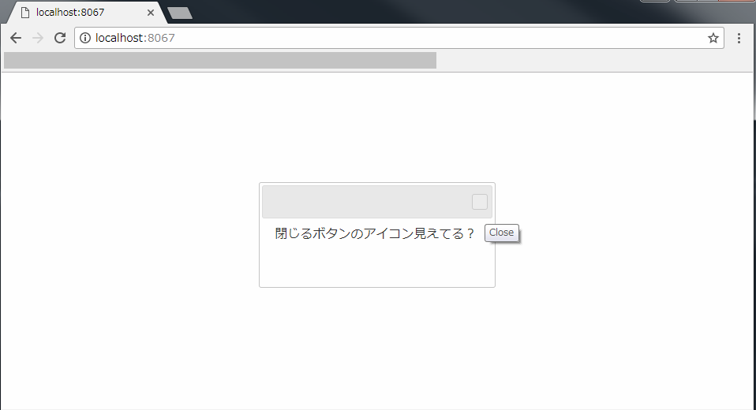
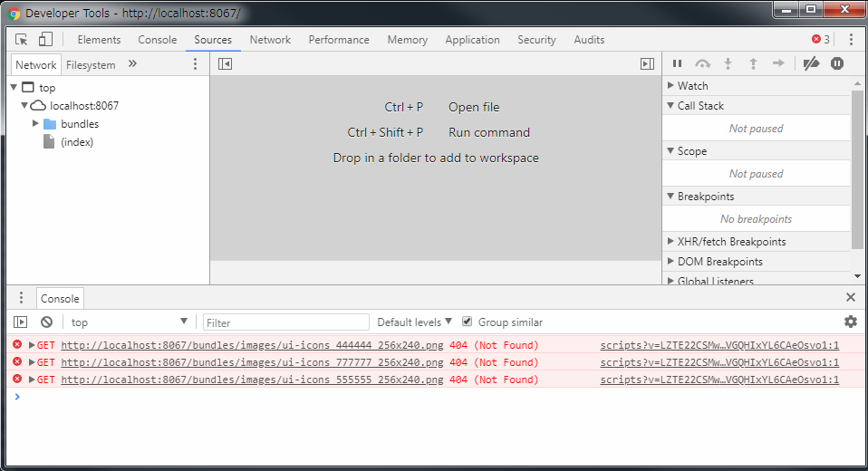
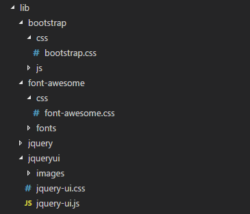
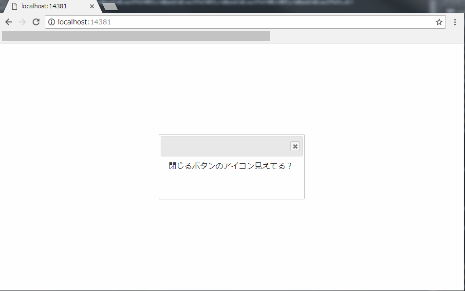
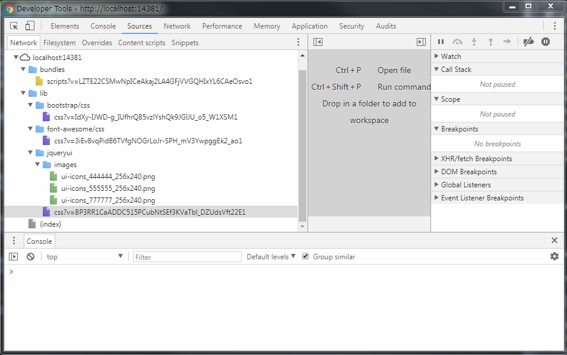

スタイルシートをバンドルする際に画像パスに注意
またASP.NETのバンドルの話です。
スタイルシートを何も考えずにまとめてバンドルする
とりあえずスタイルシートをまとめてみます。
bundles.Add(new StyleBundle("~/bundles/style").Include(
"~/lib/bootstrap/css/bootstrap.min.css",
"~/lib/jquery-ui/jquery-ui.css",
"~/lib/font-awesome/css/font-awesome.css"
));
こうすると3つのスタイルシートは一つにバンドルされます。
画面でこのスタイルを読み込んでみます。
@using System.Web.Optimization
<!DOCTYPE html>
<html>
<head>
<meta name="viewport" content="width=device-width" />
<title></title>
@Scripts.Render("~/bundles/scripts")
@Styles.Render("~/bundles/styles")
<script>
$(function () {
$("#hoge").dialog();
})
</script>
</head>
<body>
<div id="hoge">閉じるボタンのアイコン見えてる？</div>
</body>
</html>
画面を表示してみます。

ダイアログのアイコンが表示されていませんね。
コンソールを見てみるとjquery-uiのアイコンが見つからないと怒られています。

これはスタイルシートが仮想パスにバンドルされ、バンドル先にimagesが無いのが原因です。
そこで、実際にスタイルシートが置いてある場所にバンドルするようにします。
実在パスにあわせてスタイルシートをバンドルする
実際のパスはこんな感じです。 jquery-ui.cssが置かれているフォルダにimagesがあります。

では、ソースをこのように修正しましょう。
パスに<実在パス>/cssのように指定します。
bundles.Add(new StyleBundle("~/lib/jqueryui/css").Include("~/lib/jqueryui/jquery-ui.css"));
bundles.Add(new StyleBundle("~/lib/bootstrap/css/css").Include("~/lib/bootstrap/css/bootstrap.css"));
bundles.Add(new StyleBundle("~/lib/font-awesome/css/css").Include("~/lib/font-awesome/css/font-awesome.css"));
後はそれを画面から読み込みます。
@using System.Web.Optimization
<!DOCTYPE html>
<html>
<head>
<meta name="viewport" content="width=device-width" />
<title></title>
@Scripts.Render("~/bundles/scripts")
@Styles.Render("~/lib/jqueryui/css")
@Styles.Render("~/lib/bootstrap/css/css")
@Styles.Render("~/lib/font-awesome/css/css")
<script>
$(function () {
$("#hoge").dialog();
})
</script>
</head>
<body>
<div id="hoge">閉じるボタンのアイコン見えてる？</div>
</body>
</html>
画面を表示すると、ダイアログのアイコンが表示されていることが確認出来ます。

コンソールを見てみると画像を上手く参照出来ていることが分かります。

ASP.NETで画像を含むスタイルシートをバンドルする際は個別にバンドルしましょう。